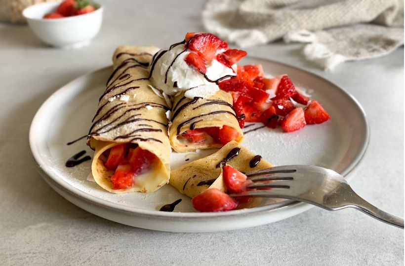

Recept na plačinky

Palačinky jsou oblíbeným jídlem po celém světě a snadno se připravují i v domácí kuchyni. Palačinky jsou tenké, kulaté placky, které se obvykle podávají s různými druhy náplní nebo příloh. Základem palačinek jsou jednoduché suroviny, jako je mouka, vejce, mléko a sůl, které se smíchají dohladka, vytvoří těsto a pak se opékají na pánvi. Následující recept vám ukáže, jak jednoduše a rychle připravit skvělé palačinky, které si můžete vychutnat k snídani, obědu nebo večeři.
Ingredience:
- mléko 250ml
- vejce 2 ks
- vanilkový cukr 1 bal
- mouka 140g
- olej/ máslo na smažení
Postup přípravy:
- V mléce rozmíchejte vejce, vanilkový cukr i sůl a postupně přidávejte mouku. Prošlehávejte metlou.
- Nechte půl hodiny v chladu odpočívat. Jedině tak vám těsto nebude dál houstnout a vy ho nebudete muset ředit.
- Rozehřejte pánev, slabě ji potřete olejem nebo máslem a postupně opékejte palačinky.
- Podávejte s jahodami a tvarohem.